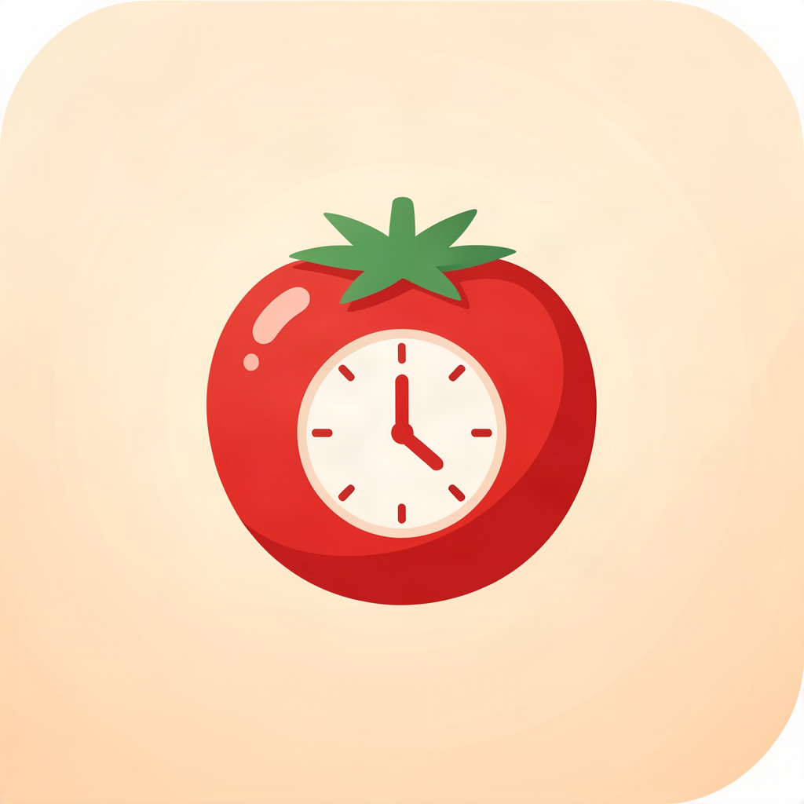

재택근무자와 개발자가 스스로 쉬는 것을 잊지 않게 돕는 포모도로 타이머. 맥과 아이폰이 함께 쉽니다.
25분 집중과 5분 휴식을 자동 반복. 알림이 오면 반드시 쉽니다 — 앉아있는 시간을 강제로 끊어줍니다.
같은 Wi-Fi의 개인 맥 서버와만 통신해, 아이폰과 맥의 타이머 상태를 실시간 동기화합니다. 한쪽에서 쉬면 다른 쪽도 쉽니다.
모든 타이머 기록은 기기에만 저장되고 외부 서버로 전송되지 않습니다. 개인 맥 서버 통신도 인터넷을 거치지 않습니다.